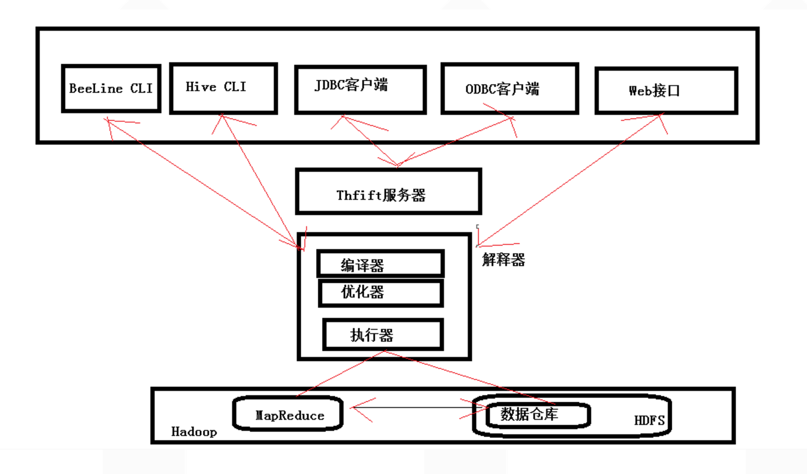
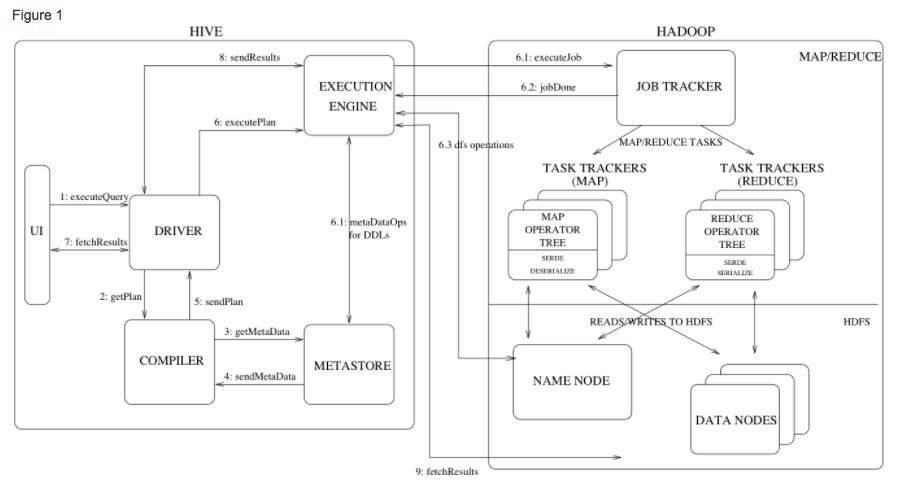
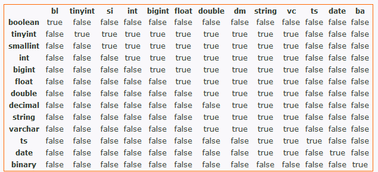

Hadoop学习指南（Hive篇）
一 Hive介绍
- CLI(command line interface)
- JDBC/ODBC
- Thrift server
- web gui
- metastore：
存储hive的元数据 - driver(complier,optimizer和executor)：
将Hive QL语句进行解析、编译优化，生成执行计划，然后调用底层的计算框架（诸如mapreduce,tez等）。
服务器端组件和客户端组件。

二 Hive安装
此处演示的hive安装环境为：
- CentOS 6.5 64位
- Hive 2.1.1
- Java 1.8
三 关于HiveQL
HiveQL虽然基于SQL，但是并不严格遵循SQL-92的标准。HiveQL提供SQL没有的扩展，包括：
四 Hive的使用
- 创建数据库
1 | -- 创建hello_world数据库 |
- 查看所有数据库
1 | show databases; |
- 查看所有表
1 | show tables; |
- 创建内部表
1 | -- 创建hello_world_inner |
- 创建分区表
1 | create table hello_world_parti |
- 展示表分区
1 | show partition hello_world_parti; |
- 创建外部表
1 |
注外部表和hive内的表区别：
1、在导入数据到外部表，数据并没有移动到自己的数据仓库目录下，也就是说外部表中的数据并不是由它自己来管理的！而表则不一样；
2、在删除表的时候，Hive将会把属于表的元数据和数据全部删掉；而删除外部表的时候，Hive仅仅删除外部表的元数据，数据是不会删除的！
- 更改表名称
1 | alter table hello_world_parti to hello_world2_parti; |
- 修改表结构
1 | -- 新增列 |
- 改变表的location
1 | alter table tracking2(表名) set location 'hdfs://ns2/user/hive/external/log/tracking'（新的位置）; |
- 对表中的某一列进行修改，包括列的名称/列的数据类型/列的位置/列的注释
1 | ALTER TABLE table_name CHANGE [COLUMN] col_old_name col_new_name column_type[COMMENT col_comment] [FIRST|AFTER column_name] |
- 创建视图
1 | create view xxx as select * from table A; |
- 导入数据
1 | load data local inpath '/home/deploy/user_info.txt' into table user_info; |
- 导出数据
1 |
四 导入数据的几种方式
比如有一张测试表：
1 | create table hello |
- 从本地文件系统中导入数据到hive表
1 | load data local inpath 'data.txt' into table hello; |
- 从HDFS上导入数据到hive表
- 从别的表中查询出相应的数据并导入到hive表中
- 创建表时从别的表查到数据并插入的所创建的表中
四 Hive Architecture

引自官网，务必仔细阅读：
Figure 1 also shows how a typical query flows through the system. The UI calls the execute interface to the Driver (step 1 in Figure 1). The Driver creates a session handle for the query and sends the query to the compiler to generate an execution plan (step 2). The compiler gets the necessary metadata from the metastore (steps 3 and 4). This metadata is used to typecheck the expressions in the query tree as well as to prune partitions based on query predicates. The plan generated by the compiler (step 5) is a DAG of stages with each stage being either a map/reduce job, a metadata operation or an operation on HDFS. For map/reduce stages, the plan contains map operator trees (operator trees that are executed on the mappers) and a reduce operator tree (for operations that need reducers). The execution engine submits these stages to appropriate components (steps 6, 6.1, 6.2 and 6.3). In each task (mapper/reducer) the deserializer associated with the table or intermediate outputs is used to read the rows from HDFS files and these are passed through the associated operator tree. Once the output is generated, it is written to a temporary HDFS file though the serializer (this happens in the mapper in case the operation does not need a reduce). The temporary files are used to provide data to subsequent map/reduce stages of the plan. For DML operations the final temporary file is moved to the table’s location. This scheme is used to ensure that dirty data is not read (file rename being an atomic operation in HDFS). For queries, the contents of the temporary file are read by the execution engine directly from HDFS as part of the fetch call from the Driver (steps 7, 8 and 9).
一个完成的hive查询过程如上所述。上次过程，也展示了hive的主要组件，以及同hadoop的接口。这些重要的组件是：
- UI：用户向系统提交查询及其他操作。
- Driver：接受用户发来的查询等操作。
- Compiler：解析查询，包括：
- Metastore：存储所有的
- Execution Engine：执行
五 Hive Data Model
Hive的数据被组织成：
- tables
- partitions
- buckets
六 Metastore
这是hive
五 常见问题
1. 多次初始化
可能解法:在终端输入hive命令时，hive的CLI会自动加载一个配置文件：
/home/deploy/apache-hive-2.1.1-bin/conf/hive-log4j2.properties
文件内容（可以略过）：
1 | # Licensed to the Apache Software Foundation (ASF) under one |
可以删除已存在的该文件，然后再次初始化一次形成新文件。
2. 指定mysql，无法初始化
一般是用户权限问题，以及错误地指定了mysql的连接IP和端口。
3. Could not obtain block
4. 修改分区字段类型
常见的一个场景是Hive里面一个带分区的表，原来是int类型的字段，后来发现数据超过了int的最大值，要改成bigint。或者是bigint要改string或decimal。无论如何，对于带分区的表，要改列类型，有一个坑：
如果使用alter table t change column oldcol newcol bigint，即把int类型的oldcol改为bigint类型的newcol
这个时候，去读数据，应该还是NULL的。
这是因为每个分区Hive还会存一份元数据，于是两种解决方案：
alter table t change column oldcol newcol bigint cascade;
alter table t change column oldcol newcol bigint, alter table t partition(…) change column oldcol newcol bigint;
同时，在修改表字段类型时，会遇到各种限制：

特别是string转int，hive不让转。如果某个字段一定是int值类型，但是不小心存成了string，这个时候可以先取消hive内置的限制。在hive CLI中执行：set hive.metastore.disallow.incompatible.col.type.changes=false;
执行string to int的sql,例如：将string类型的unix时间戳（createdtime字段）转成int，则alter table fact_jinrong_submit change column createdtime createdtime int cascade;
最后，一定要注意恢复该限制：set hive.metastore.disallow.incompatible.col.type.changes=true;